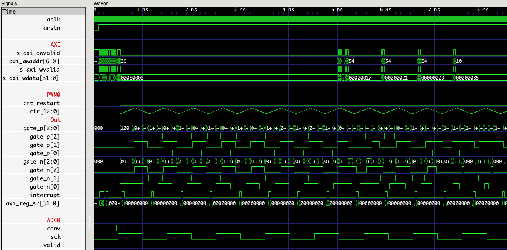

Abstract
Based on a simulation and multiple research papers I implemented a PI control algorithm and a complex PWM modulator in FPGA fabric and CPU to control a high power converter.
The result are two IP cores that are controlled over an AXI4Lite interface by the CPU, both with PWM modulators, one having a PI controller built in and the other multi channel ADC support.
A low level C driver can be used to communicate with the cores from the ARM CPU on the Zynq SoC.
Methods
All hardware code is written in VHDL and simulated using the open source VHDL vimulatur ghdl.
Testbenches are written in Python to be used with the Cocotb testbench environment.
This workflow enabled fast verification because the stimuli generation of complex interfaces such as AXI4 is already built into Cocotb.

The documentation is written in Markdown.
Escpecially register documentation is vital when developing AXI4 IP cores.
By writing in Markdown language I could make use of version control and the automatic linting of the version control server.
Hardware
A Xilinx Zynq FPGA + CPU system on chip is used for the project.
It allows for the time critical parts can be implemented in hardware and the computation intensive task to be executed by the CPU.
Furthermore a wide range of communication peripherals built into the SoC enables easy communication.